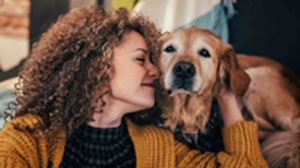
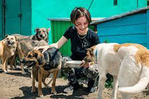

🐶🐱🐰Rescataditos nació en el corazón de Santo Tomé, Santa Fe, como respuesta a una
realidad que no podíamos seguir ignorando: animales abandonados, maltratados o invisibilizados,
esperando una mano amiga. Lo que comenzó como el impulso de un pequeño grupo de vecinos con amor por los
animales, se transformó en una red solidaria que no distingue especie, tamaño ni condición.🐾


En el año 2018, un grupo de voluntarios se organizó para rescatar a una perrita que vivía
debajo de un puente, enferma y sin fuerzas. Ese rescate fue el primero de muchos. Con el tiempo, sumamos
más manos, más corazones y más hogares dispuestos a dar segundas oportunidades.
Así nació Rescataditos: con cada historia, cada mirada, cada cola que volvió a moverse. Hoy somos una
ONG sin fines de lucro, formada por personas que creen que cada vida merece respeto, cuidado y amor.
Trabajamos en rescate de animales en situación de calle, abandono o maltrato. Acompañando en las rehabilitación física y emocional con atención veterinaria. Buscando tránsito responsable en hogares temporales o adopciones conscientes, con seguimiento y compromiso. 💚 Nuestros valores son Empatía, porque cada ser vivo merece ser escuchado. Transparencia, compartimos cada paso, cada historia.